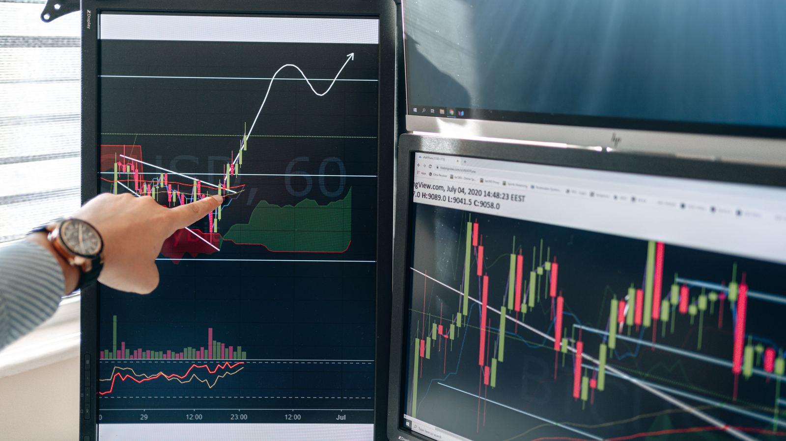

TradingView Basics for Beginners

TradingView is a web-based charting platform loved for its clean charts and huge indicator library. Here is the beginner tour.
Getting started free
The free plan covers most beginner needs: clean charts, core indicators, and a few alerts.
Open XAUUSD or EUR/USD, switch to candlesticks, and save your layout — your charts follow you on any device via the browser.
Essential features
Learn: drawing tools (trend lines, S/R zones), the indicator library (add RSI or MAs in two clicks), multi-timeframe views, and price alerts that ping your phone.
These four cover 90% of beginner analysis.
Alerts instead of staring
Set alerts at your key levels and walk away — TradingView notifies you when price arrives.
This single habit cures overtrading-by-boredom and works beautifully with a fixed trading window.
Community with caution
Published trade ideas are great for learning different perspectives, but treat them as study material, not instructions.
Verify everything yourself; popularity does not equal accuracy.
Frequently asked questions
Is TradingView free?
Yes, with a generous free tier; paid plans add more alerts and indicators.
Can I trade from TradingView?
Some brokers integrate for trading; many use it for analysis alongside MT4/MT5 for execution.
Is it better than MT4/MT5 charts?
For analysis, most find it superior; for execution, broker platforms still rule. Many use both.